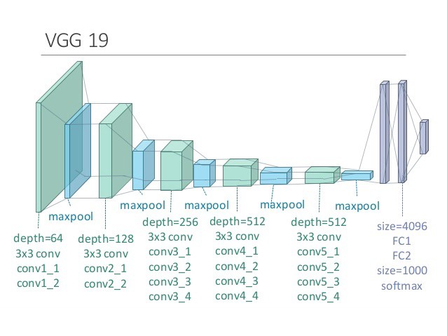

Style Transfer
Table of Contents
1 Style Transfer
1.1 方差, 协方差, 协方差矩阵, gram 矩阵
方差是为了评价随机变量的离散程度
\(V=\frac{\sum(X-\mu)^2}{N}\)
协方差是为了衡量两个随机变量的离散程度, 或者相关性
\(cov(X,Y)=\frac{\sum(X-\mu_x)*(Y-\mu_y)}{N}\)
- 方差是随机变量与自身的协方差
协方差矩阵是多个随机变量两两之间的协方差
\(C_{ij}=\begin{bmatrix}c11&c12&c13&\ldots\\c21&c22&c23&\ldots\\\vdots&\vdots&\ddots\end{bmatrix}\)
gram 矩阵是偏心协方差矩阵, 它在计算时没为减去均值
import numpy as np x = np.array([[1, 2, 3, 4, 5], [1, 2, 3, 4, 5], [-1, -2, -3, -4, -5]]) gram = np.matmul(x, x.T) gram
array([[ 55, 55, -55], [ 55, 55, -55], [-55, -55, 55]])
gram 矩阵与协方差矩阵类似, 反映了不同随机变量的相关性. 上面的例子显示, x1 与 x2 正关, x1 与 x3 负相关
1.2 style loss
style loss 用来衡量 target image 与 style image 的 style 的差别. 使得 target image 在训练时能趋向于 style image 的 style.
CNN 中卷积层的输出可以看作某种 style. 所以 style transfer 时会把 target image 在某层卷积层的输出与 style image 在同一层卷积层的输出作比较.
具体的方法是:
- 分别计算 style image 和 target image 在某一层卷积层输出的 feature map, 例如 [10, 16, 16] 大小的矩阵. 表示输出 10 个 feature map, 每个 feature map 是 [16, 16] 大小的矩阵
- 把 [10, 16, 16] 矩阵 reshape 成 [10, 16 * 16], 然后计算其 gram 矩阵
- 对 target image 和 style image 的 gram 矩阵做 MSELoss
1.3 content loss
content loss 用来衡量 target image 与 input image 的差别. 在训练开始时, target image的各个像素可以设定为随机值. 训练时通过最小化 content loss, 可以使 target image与 input image 越来越像.
实现上, content loss 只是简单的把 target image 与 input image 做 MSELoss 即可.
1.4 网络模型
style transfer 使用了训练好的 vgg19 网络:

在 pytorch 中, vgg19 的 fc 层之前的部分为:
Sequential( (0): Conv2d(3, 64, kernel_size=(3, 3), stride=(1, 1), padding=(1, 1)) (1): ReLU(inplace) (2): Conv2d(64, 64, kernel_size=(3, 3), stride=(1, 1), padding=(1, 1)) (3): ReLU(inplace) (4): MaxPool2d(kernel_size=2, stride=2, padding=0, dilation=1, ceil_mode=False) (5): Conv2d(64, 128, kernel_size=(3, 3), stride=(1, 1), padding=(1, 1)) (6): ReLU(inplace) (7): Conv2d(128, 128, kernel_size=(3, 3), stride=(1, 1), padding=(1, 1)) (8): ReLU(inplace) (9): MaxPool2d(kernel_size=2, stride=2, padding=0, dilation=1, ceil_mode=False) (10): Conv2d(128, 256, kernel_size=(3, 3), stride=(1, 1), padding=(1, 1)) (11): ReLU(inplace) (12): Conv2d(256, 256, kernel_size=(3, 3), stride=(1, 1), padding=(1, 1)) (13): ReLU(inplace) (14): Conv2d(256, 256, kernel_size=(3, 3), stride=(1, 1), padding=(1, 1)) (15): ReLU(inplace) (16): Conv2d(256, 256, kernel_size=(3, 3), stride=(1, 1), padding=(1, 1)) (17): ReLU(inplace) (18): MaxPool2d(kernel_size=2, stride=2, padding=0, dilation=1, ceil_mode=False) (19): Conv2d(256, 512, kernel_size=(3, 3), stride=(1, 1), padding=(1, 1)) (20): ReLU(inplace) (21): Conv2d(512, 512, kernel_size=(3, 3), stride=(1, 1), padding=(1, 1)) (22): ReLU(inplace) (23): Conv2d(512, 512, kernel_size=(3, 3), stride=(1, 1), padding=(1, 1)) (24): ReLU(inplace) (25): Conv2d(512, 512, kernel_size=(3, 3), stride=(1, 1), padding=(1, 1)) (26): ReLU(inplace) (27): MaxPool2d(kernel_size=2, stride=2, padding=0, dilation=1, ceil_mode=False) (28): Conv2d(512, 512, kernel_size=(3, 3), stride=(1, 1), padding=(1, 1)) (29): ReLU(inplace) (30): Conv2d(512, 512, kernel_size=(3, 3), stride=(1, 1), padding=(1, 1)) (31): ReLU(inplace) (32): Conv2d(512, 512, kernel_size=(3, 3), stride=(1, 1), padding=(1, 1)) (33): ReLU(inplace) (34): Conv2d(512, 512, kernel_size=(3, 3), stride=(1, 1), padding=(1, 1)) (35): ReLU(inplace) (36): MaxPool2d(kernel_size=2, stride=2, padding=0, dilation=1, ceil_mode=False) )
style transfer 使用了 transfer learning 的方法, 提取了上图中的卷积层(绿色)和 maxpool 层 (蓝色) 部分. 然后前五个卷积层之后加入了一个 style loss 层, 在每四个卷积层后加一个 content loss, 然后删除了 content loss 之后的部分, 形成下面的结构:
Sequential( (0): Normalization() (conv_1): Conv2d(3, 64, kernel_size=(3, 3), stride=(1, 1), padding=(1, 1)) (style_loss_1): StyleLoss() (relu_1): ReLU() (conv_2): Conv2d(64, 64, kernel_size=(3, 3), stride=(1, 1), padding=(1, 1)) (style_loss_2): StyleLoss() (relu_2): ReLU() (pool_2): MaxPool2d(kernel_size=2, stride=2, padding=0, dilation=1, ceil_mode=False) (conv_3): Conv2d(64, 128, kernel_size=(3, 3), stride=(1, 1), padding=(1, 1)) (style_loss_3): StyleLoss() (relu_3): ReLU() (conv_4): Conv2d(128, 128, kernel_size=(3, 3), stride=(1, 1), padding=(1, 1)) (content_loss_4): ContentLoss() (style_loss_4): StyleLoss() (relu_4): ReLU() (pool_4): MaxPool2d(kernel_size=2, stride=2, padding=0, dilation=1, ceil_mode=False) (conv_5): Conv2d(128, 256, kernel_size=(3, 3), stride=(1, 1), padding=(1, 1)) (style_loss_5): StyleLoss() )
之所以插入多个 style loss 和 content loss 层, 是为了计算 loss 方便.
1.5 训练
style transfer 的训练与正常 CNN 有两点不同:
- style transfer 网络的优化的目标不是各层的权重(各层权重来自训练好的 vgg19, 是固定的), 而是网络的输入(即 target image). 在训练时, 网络会根据 contet loss 和 style loss 的情况对 target image 进行更新,越它越来越好.
- 正常的 cnn 训练时, 损失函数通常是用网络最后的输入与 label 计算一个 MSELoss 或 BCELoss. style transfer 网络不同, 它的 loss 是取中多个中间层的结果, 分别计算了多个 style loss 或 content loss 后加权求和, 作为最终的 loss. 这里的加权是指在 `与 style image 更像` 和 `与 input image 更像` 之间折衷